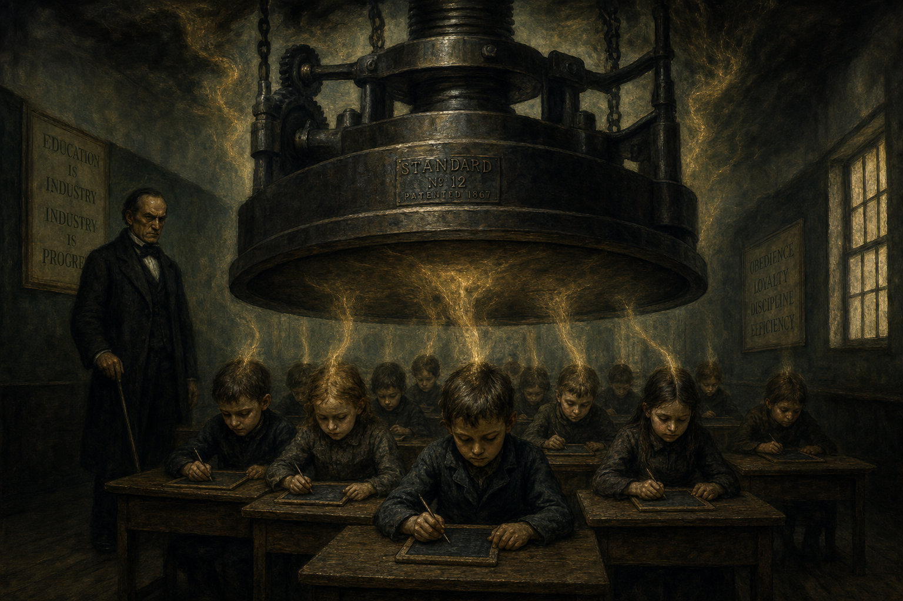

Was wir Kindern antun
Die systematische Auspressung
Polemik · 14 Min. Lesezeit

Von Jacobus van Merksteijn
Ein dreijähriges Kind sitzt auf dem Boden. Es spielt. Es baut etwas aus Bausteinen — einen Turm, oder was in der Vorstellung des Kindes ein Turm ist. Das Kind ist vollständig anwesend bei dem, was es tut. Es gibt keine Vergangenheit und keine Zukunft in dieser Konzentration. Es gibt nur den Turm, die Hand, den Stein, das Jetzt. Das ist das Urgefühl in seiner vollen Wirkung.
Dann klingelt es. Die Kinderbetreuung hat einen Plan. Es ist Zeit für den Stuhlkreis. Das Kind muss aufhören. Das Kind weint, oder es verhandelt, oder es lernt schon früh zu schweigen und zu gehorchen.
Dieser Moment ist nicht dramatisch. Er ist einfach der Plan. Aber er ist auch der Moment, in dem ein Kind zum ersten Mal lernt, dass das, was es von innen heraus spürt — die Konzentration, das Aufgehen, die vollständige Anwesenheit — einer externen Struktur untergeordnet ist, die es weder gewählt noch verstanden hat. Es lernt das, und es vergisst es nicht.
Das ist es, was wir unseren Kindern antun. Nicht aus Böswilligkeit. Aus Planungslogik. Aber den Preis bezahlt das Kind.
Sieben Dimensionen, eine nach der anderen
Artikel 2 dieser Ausgabe beschrieb das 7-dimensionale Gefühlsmodell: die drei räumlichen Dimensionen, die Zeitdimension, die G-Achse (Liebe/Hass, Wertschätzung/Ablehnung), die W-Achse (real/irreal) und die N-Achse (die individuelle Position). Sieben Dimensionen, die zusammen das menschliche innere Leben beschreiben.
Ein Kind von null bis sechs Jahren ist von Natur aus zu Hause in den ersten drei: den räumlichen Dimensionen des Körpers, der Bewegung, der direkten Umgebung. Es lebt in seinem Körper. Es lebt im Jetzt. Es ist Experte darin, Stimmungen, Menschen und Situationen zu erspüren. Es hat ein Schlafmuster, das den Nachtstrom maximal nutzt — kleine Kinder schlafen viel und träumen viel, und das ist kein Zufall. Der REM-Schlaf ist in den frühen Kinderjahren proportional am längsten; das Gehirn verarbeitet die enorme Menge neuer Informationen über genau den Mechanismus, den Artikel 3 beschreibt.
Was tun wir dann? Wir fangen früh an. Manchmal schon ab sechs Wochen, wenn das Kind in die Kinderbetreuung kommt. Wir führen die Zeitdimension ein: Pläne, Stundenpläne, Montag und Dienstag, um halb elf Saft und Kekse. Wir führen die moralische Dimension ein — die G-Achse in ihrer himmlischen Form: nett zu anderen sein, auf seinen Zug warten, nicht schlagen, an Regeln teilnehmen, die voraussetzen, dass das Kind ein moralisches Subjekt ist, das seine Impulse bewusst steuern kann. Das ist ein dreijähriges Kind nicht. Der präfrontale Kortex — der Sitz des moralischen Denkens und der Impulskontrolle — ist erst um das fünfundzwanzigste Jahr vollständig ausgereift. Wir verlangen von einem Dreijährigen, als moralisches Subjekt eines Fünfundzwanzigjährigen zu funktionieren.
Wir führen die Selbstdefinition ein: "Was magst du? Was willst du werden? Was ist deine Lieblingsfarbe?" Fragen, die aus der N-Achse entstammen, aus dem expliziten Selbstbewusstsein. Aber die N-Achse ist bei einem Vierjährigen als individualisierte Struktur überhaupt nicht operationell. Das Kind kann diese Frage nicht aus sich heraus beantworten. Es rät — und Raten ist genau das, was es tut, nicht von innen heraus, sondern aus der Erwartung heraus, die in der Frage liegt.
Wir führen die W-Achse ein: die Unterscheidung zwischen real und irreal, Wirklichkeit und Phantasie. "Das gibt es nicht wirklich." "Das ist nur ein Märchen." "Monster gibt es nicht." Aber die W-Achse ist in ihrer abstrakten kognitiven Form für ein Kind erst um das zehnte bis zwölfte Jahr handhabbar. Vor diesem Alter lebt ein Kind in einer Welt, in der der Grenzpunkt zwischen Wirklichkeit und Phantasie fließend ist — und das ist kein Fehler, sondern eine Entwicklungsphase. Das Monster unter dem Bett ist so real wie das Bett. Wer das negiert, schneidet nicht die Angst ab, sondern die Fähigkeit zum symbolischen Denken.
All diese Dimensionen gleichzeitig, zu früh, auf ein Gehirn, das noch nicht dafür reif ist.
Was zu früh zu schnell kaputtmacht
Konkret gesprochen.
Die Zeitdimension zu früh einzuführen — Pläne und Stundenpläne vor dem sechsten Jahr — erzeugt Kinder, die lernen, im Rhythmus einer externen Uhr zu leben statt in ihrem eigenen biologischen Rhythmus. Der Biorhythmus, die eigene Verarbeitungsgeschwindigkeit, der Zyklus von Konzentration und Erholung — all das wird blockiert. Was an seine Stelle tritt, ist ein Reflex auf den Glockenton. Das ist kein Lernen. Das ist Konditionierung.
Die moralische Dimension vor dem zwölften Jahr in ihrer abstrakten himmlischen Form einzuführen — "das ist gut", "das ist falsch" als abstrakte ethische Kategorien — erzeugt Kinder, die lernen, ihrem eigenen Gespür für Gerechtigkeit zu misstrauen. Denn ihr Gespür für Gerechtigkeit ist situationell und direkt: Das fühlt sich nicht gut an. Aber die abstrakte Moralregel sagt, was immer gilt, unabhängig von der Situation. Das Kind lernt: Mein direktes Gespür ist weniger verlässlich als die Regel. Das ist genau das Gegenteil von dem, was das Kind braucht.
Außerdem: Die G-Achse in ihrer himmlischen Form stellt Liebe oben und Hass unten, und lehrt das Kind, dass das Gute aufwärts zeigt und das Böse abwärts. Aber ein Kind hat auch eine irdische G-Achse — das Gespür, dass Liebe auch das sein kann, was trägt und nährt und Boden gibt, nicht nur das, was himmlisch nach oben weist. Indem man nur die himmlische G-Achse anbietet, lernt ein Kind, seinem eigenen irdischen Gespür zu misstrauen. Die Mutter, die nährt, ist weniger heilig als der Himmel, der verheißt. Das ist ein tiefes psychologisches Problem, das sich später im Leben seinen Preis präsentiert.
Die W-Achse zu früh in ihrer abstrakten kognitiven Form einzuführen — die Unterscheidung zwischen real und irreal als Maßstab für die Legitimität eigener Erfahrungen — erzeugt Kinder, die lernen, ihre Phantasie als Problem zu sehen. Das Kind, das sagt "Ich sehe ein Monster" und zu hören bekommt "Das gibt es nicht", lernt nicht, dass Monster nicht existieren — das weiß es später selbst. Es lernt, dass sein direktes Gespür von etwas Bedrohlichem nicht legitim ist, wenn es keinen Namen im Katalog des Akzeptablen hat. Das ist der Kern dessen, was das angelernte Loos erzeugt: Das Gefühl ist da, aber das Kind lernt, dass es nicht da sein darf.
Die N-Selbstdefinition zu früh zu erzwingen — "Was findest du?", "Wer bist du?" — erzeugt Kinder, die ein sprachliches Selbstkonzept aufbauen, bevor es ein gefühltes Selbst gibt, auf dem man aufbauen könnte. Es ist wie ein Haus auf Sand — die Mauern stehen, aber es gibt kein Fundament. Später im Leben äußert sich das als die Frage, die Menschen in den Vierzigern als Krise erleben: Wer bin ich eigentlich? Diese Krise ist kein Zeichen der Reifung. Sie ist ein Zeichen dafür, dass das Selbstverständnis, das in jungen Jahren gebaut wurde, nicht im Urgefühl verankert war.
Stufenweise Einführung: die vier Phasen
Es gibt eine Alternative, die nicht utopisch, sondern konkret ist. Es geht nicht darum, alles Bestehende abzuschaffen, sondern die Reihenfolge anzupassen.
Die erste Phase läuft von null bis sechs Jahren. In dieser Phase ist das Kind zu Hause in den drei räumlichen Dimensionen: oben und unten, links und rechts, vorne und hinten. Es lebt in seinem Körper und im direkten Raum um sich herum. Das Urgefühl ist in dieser Phase am stärksten, gerade weil die höheren Dimensionen noch nicht als System aktiviert sind.
Was Erziehung und Bildung in dieser Phase tun müssen: das Urgefühl schützen. Nicht kultivieren im Sinne von lenken — es ist schon da. Schützen im Sinne von nicht überlasten, nicht überschreiben, nicht zu früh Abstraktion einführen, die das direkte Erleben ersetzt. Keine abstrakte Zeitwahrnehmung. Keine formalen Zahlenbewertungen. Keine Pläne, die den biologischen Rhythmus des Kindes übergehen. Stattdessen: viel Bewegen, viel draußen sein, viel Geschichten hören, viel Spiel mit anderen, und die ungestörte Konzentration, die jedes Kind von Natur aus hat.
Die zweite Phase läuft von sechs bis zwölf Jahren. In dieser Zeit wird die Zeitdimension allmählich handhabbar, aber noch konkret: der Rhythmus der Jahreszeiten, die Wiederkehr des Sommers, der Unterschied zwischen gestern und morgen. Die W-Achse kann in ihrer konkretesten Form angeboten werden: die Unterscheidung zwischen Wirklichkeit und Phantasie, nicht als kognitives Konstrukt, sondern als Entdeckung durch Märchen und Mythologie. Kinder von sechs bis zwölf sind von Natur aus genau an diesem Grenzpunkt interessiert. Aber das kognitive "Das gibt es nicht wirklich" ist in dieser Phase immer noch destruktiv — die Unterscheidung muss in der Geschichte, im Spiel, in der Entdeckung angeboten werden, nicht als Maßstab für die Legitimität eigener Wahrnehmungen.
Formale moralische Urteile gehören nicht in diese Phase. Das Kind hat ein feines Gespür für Gerechtigkeit in der direkten Situation — dieses Gespür ist der Urkern der G-Achse und muss vertraut werden, nicht durch abstrakte Regeln überstimmt. Formale Zahlenbewertungen ebenfalls nicht. Feedback kann reich und konkret sein, ohne auf eine Zahl zu reduzieren, die das Kind auf einer Leiter platziert.
Die dritte Phase läuft von zwölf bis achtzehn Jahren. Erst in der frühen Adoleszenz sind die höheren Dimensionen reif für explizite Einführung. Die Zeitdimension in ihrer abstrakten Form — Planung als systematisches Zukunftsdenken — wird handhabbar, wenn die Identität ausreichend gefestigt ist, um eine Beziehung zur Zukunft tragen zu können. Die G-Achse in ihrer moralisch-abstrakten Form — ethische Fragen über Gut und Böse in der Gesellschaft, das Individuum gegenüber dem System — wird handhabbar, wenn das Kind auch die kognitive Kapazität hat, mehrere Perspektiven gleichzeitig zu halten. Und die N-Achse in ihrer expliziten Selbstdefinitionsform — "Wer bin ich?", "Was sind meine Werte?" — wird handhabbar in der mittleren und späten Adoleszenz. Nicht früher.
Die Frage, die der Jugendliche bewältigen kann und braucht, ist nicht "Was willst du werden?", sondern "Was bewegt dich?" Nicht "Wer bist du?", sondern "Wann fühlst du dich am meisten du selbst?" Die erste Art von Fragen zwingt, ein abstraktes Selbstkonzept zu konstruieren. Die zweite Art verweist auf das direkte Gespür.
Die vierte Phase beginnt mit achtzehn und geht ein Leben lang. Erst im frühen Erwachsenenalter, wenn alle Dimensionen durch das Leben eingeführt wurden und der Nachtstrom die Gelegenheit hatte, sie Jahr für Jahr weiter zu sedimentieren, ist der Mensch in der Lage, alle sieben Dimensionen integriert zu nutzen. Diese Integration ist nur möglich, wenn das Urgefühl in den Jahren, in denen es verletzlich war, intakt gelassen wurde. Wer mit achtzehn ankommt mit einem erloschenen Urgefühl, hat kein Fundament, auf dem die Integration ruhen kann. Er hat Wissen — aber keinen Kompass.
Der Preis des aktuellen Ansatzes
Ich will hier nicht zimperlich sein. Der Preis des aktuellen Systems ist konkret und weithin sichtbar.
Burnout trifft nicht nur Erwachsene nach Jahrzehnten der Arbeit — er beginnt bei Jugendlichen, die bereits mit vierzehn erschöpft vom Leisten sind. Angst- und Depressionsstörungen sind unter Jugendlichen in allen westlichen Ländern epidemisch. Bindungsproblematik in großem Maßstab. Eine Einsamkeitsepidemie, die die körperlichen Gesundheitskosten des Rauchens erreicht. Eine Bevölkerung, die nicht weiß, was sie fühlt, die ihren Körper nicht hört, die ihrem direkten Gespür nicht vertraut.
Das sind nicht die Nebenwirkungen eines im Übrigen erfolgreichen Systems. Das sind die Symptome eines Systems, das sein kostbarstes Produkt — das Urgefühl als funktionierenden Kompass — systematisch in dem Alter entfernt, in dem es am verletzlichsten ist.
Ein Kind, dem alle sieben Dimensionen gleichzeitig, zu früh auferlegt werden, verliert seinen direkten Zugang zu sich selbst. Es verliert seine Fähigkeit zur Stille. Es verliert sein Gespür für andere. Es verliert seinen natürlichen Rhythmus. Es verliert seine Tiefenkonzentration.
Und mit all diesen Verlusten verliert die Gesellschaft genau die Menschen, die sie im einundzwanzigsten Jahrhundert am dringendsten braucht: Menschen, die die Wirklichkeit direkt lesen können, die es wagen, aus einem Gespür heraus zu handeln, die nicht durch gute Argumente manipulierbar sind, die in die falsche Richtung führen.
Das System war schon für das zwanzigste Jahrhundert schlecht. Für das einundzwanzigste ist es eine Katastrophe.
Wer weiterlesen möchte: Die vollständige Ausarbeitung der vier Entwicklungsphasen und der stufenweisen Einführung der sieben Dimensionen steht im Manifest für Bildung und Erziehung. Das theoretische Fundament — warum die sieben Dimensionen in dieser Reihenfolge reifen, und was der Nachtstrom dabei spielt — steht im Werk Denkbasis für ein 7-dimensionales Gefühlsmodell. Beide sind als Download auf openvizier.org verfügbar.